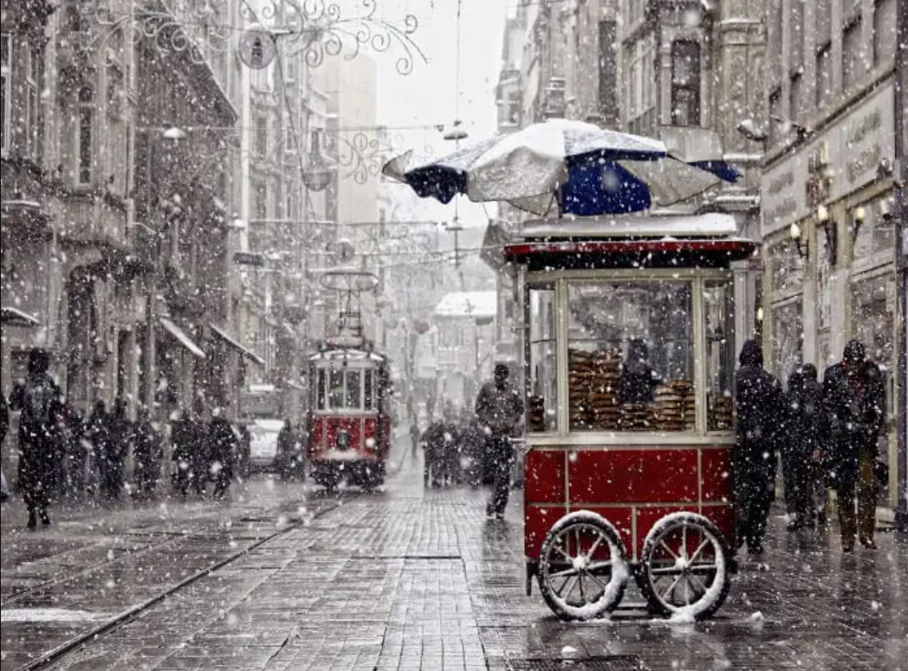
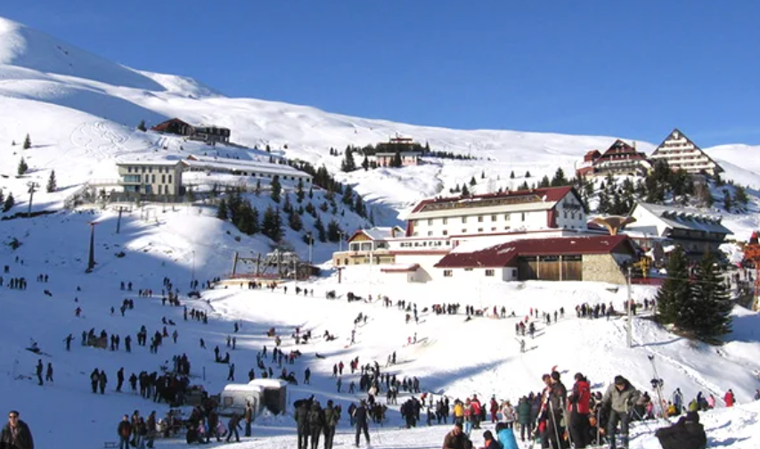
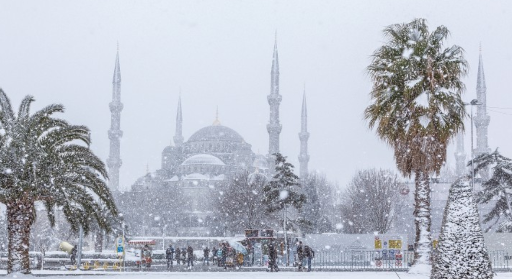

Turkey attracts tourists all year round and winter is an ideal time to plan Turkey tours, especially for those who prefer cooler weather, fewer tourists, and cost-effective prices. The months of December to February offer a unique winter experience with various activities and attractions to explore. Istanbul and Cappadocia are two of the most popular destinations to visit during this season, where visitors can ski, snowboard, soak in hot springs, and join winter festivals. Winter in Turkey also provides an opportunity to explore the rich culture and history while avoiding the summer crowds and discovering hidden gems.
Turkey experiences a varied winter climate across its regions, making it an ideal destination for winter tourism. The weather in Turkey during winter months can be chilly, especially in the eastern Anatolia regions, but it's still mild compared to many European countries. The coastal regions are generally warmer, with average temperatures ranging between 10-15°C. December and January are the coldest months, and the temperature can drop below zero in some regions.Turkey in December is a great time to explore the southern coastal regions such as Antalya and Bodrum. These areas offer a more temperate climate with warm average temperatures. If you are looking to soak up some sun and explore historical sites, Antalya is the warmest place in Turkey in winter with an average temperature of 15°C during December. The southeastern region of Gaziantep also experiences mild temperatures, with an average of 10°C in December.
Winter in Turkey offers a unique experience for visitors and here are a few compelling reasons to visit Turkey in winter: Lower prices: Fewer tourists visit Turkey during the winter months, which means many establishments also reduce their prices. Many hotels and tour operators offer discounted rates during the off-season, making exploring the country on a budget easier. Fewer crowds: Another advantage of visiting Turkey in winter is the lack of crowds. Popular tourist attractions such as the Hagia Sophia and ruins at Hierapolis, are overrun with visitors during peak summer season but can be enjoyed in peace in winter. Scenery: Turkey's natural beauty is on full display during winter. From the snow-capped Kackar mountains to serene Lake Cildir, the country is transformed into a winter wonderland. You can also witness unique winter landscapes in places like Cappadocia, where hot air balloons rise above the snow-covered terrain.
  